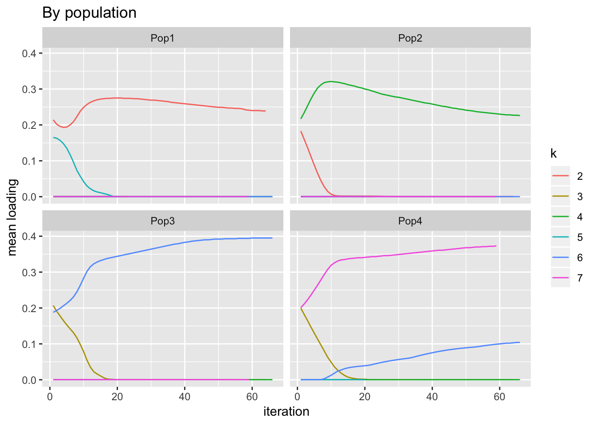
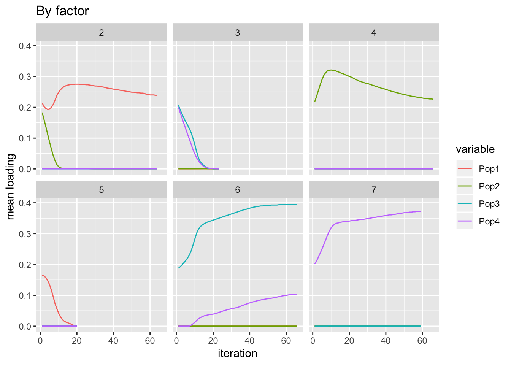

Last updated: 2019-04-29
Checks: 6 0
Knit directory: scFLASH/
This reproducible R Markdown analysis was created with workflowr (version 1.2.0). The Report tab describes the reproducibility checks that were applied when the results were created. The Past versions tab lists the development history.
Great! Since the R Markdown file has been committed to the Git repository, you know the exact version of the code that produced these results.
Great job! The global environment was empty. Objects defined in the global environment can affect the analysis in your R Markdown file in unknown ways. For reproduciblity it’s best to always run the code in an empty environment.
The command set.seed(20181103) was run prior to running the code in the R Markdown file. Setting a seed ensures that any results that rely on randomness, e.g. subsampling or permutations, are reproducible.
Great job! Recording the operating system, R version, and package versions is critical for reproducibility.
Nice! There were no cached chunks for this analysis, so you can be confident that you successfully produced the results during this run.
Great! You are using Git for version control. Tracking code development and connecting the code version to the results is critical for reproducibility. The version displayed above was the version of the Git repository at the time these results were generated.
Note that you need to be careful to ensure that all relevant files for the analysis have been committed to Git prior to generating the results (you can use wflow_publish or wflow_git_commit). workflowr only checks the R Markdown file, but you know if there are other scripts or data files that it depends on. Below is the status of the Git repository when the results were generated:
Ignored files:
Ignored: .DS_Store
Ignored: .Rhistory
Ignored: .Rproj.user/
Ignored: data/GSE103354_Trachea_droplet_UMIcounts.txt
Untracked files:
Untracked: analysis/NBapprox.Rmd
Untracked: code/missing_data.R
Untracked: code/pseudocounts.R
Untracked: data/flash_drift_res.txt
Untracked: data/tuft.R
Untracked: data/tuft.rds
Unstaged changes:
Modified: code/sc_comparisons.R
Note that any generated files, e.g. HTML, png, CSS, etc., are not included in this status report because it is ok for generated content to have uncommitted changes.
These are the previous versions of the R Markdown and HTML files. If you’ve configured a remote Git repository (see ?wflow_git_remote), click on the hyperlinks in the table below to view them.
| File | Version | Author | Date | Message |
|---|---|---|---|---|
| Rmd | 9451bcb | Jason Willwerscheid | 2019-04-29 | wflow_publish(“analysis/drift_backfit.Rmd”) |
Joe’s code. Hey, Joe.
library(ggplot2)
library(dplyr)
library(tidyr)
library(tmvtnorm)
devtools::load_all("~/Github/flashier")
simple_graph_simulation = function(n_per_pop=10,
p=1000,
w=0.0,
c1=.1,
c2=.1,
c3=.1,
c4=.1,
c5=.05,
c6=.1,
c7=.05,
mu_a=.5,
sigma_e=.05){
# number of populations
n_pops = 4
# simulate ancestral allele freqeuncy
p_a = mu_a + rnorm(p, 0, sigma_e)
# ancestral variance
sigma_a = p_a * (1.0 - p_a)
# covariance matrix specified by the tree
V = matrix(NA, nrow=4, ncol=4)
V[1, 1] = c2 + c6
V[2, 1] = V[1, 2] = c2
V[2, 2] = c2 + c5 + c7
V[3, 1] = V[1, 3] = w * c2
V[3, 2] = V[2, 3] = w * (c2 + c5)
V[3, 3] = (w^2 * (c2 + c5)) + ((1 - w)^2 * (c1 + c3))
V[4, 1] = V[1, 4] = 0.0
V[4, 2] = V[2, 4] = 0.0
V[4, 3] = V[3, 4] = (1.0 - w) * c1
V[4, 4] = c1 + c4
# simulate allele frequencies
P = matrix(NA, nrow=p, ncol=n_pops)
for(j in 1:p){
# simulate from truncated multivariate normal
P[j, ] = tmvtnorm::rtmvnorm(1, rep(p_a[j], n_pops), sigma_a[j] * V,
lower=rep(1e-4, n_pops),
upper=rep(1.0-1e-4, n_pops)
)
}
# simulate genotypes
Y = matrix(rbinom(n_per_pop * p, 2, P[,1]), nrow=p, ncol=n_per_pop)
for(i in 2:n_pops){
Y_i = matrix(rbinom(n_per_pop * p, 2, P[,i]), nrow=p, ncol=n_per_pop)
Y = cbind(Y, Y_i)
}
return(list(Y=t(Y), P=t(P), p_a=p_a))
}
structure_plot = function(gath_df, colset, facet_levels, facet_grp="Simple.Population.ID", label_size=5, keep_leg=F, fact_type){
if(fact_type=="structure"){
p_init = ggplot(data=gath_df, aes(x=reorder(ID, value, function(x){max(x)}), y=value,
fill=reorder(K, sort(as.integer(K)))))
} else if(fact_type=="nonnegative"){
p_init = ggplot(data=gath_df, aes(x=reorder(ID, value), y=value,
fill=reorder(K, sort(as.integer(K)))))
}
p = p_init +
geom_bar(stat="identity", width=1) +
scale_fill_brewer(palette = colset) +
scale_y_continuous(expand=c(0, 0)) +
scale_x_discrete(expand=c(-1, 0)) +
facet_grid(. ~ factor(get(facet_grp), levels=facet_levels), scales = "free", space="free", switch="both") +
theme_classic() +
theme(panel.spacing = unit(0.2, "lines"),
strip.background = element_rect(colour="white", fill="white"),
strip.text.x = element_text(size = label_size, colour = "black", angle = 90, hjust = 1.1),
strip.placement = "outside",
panel.grid.major = element_blank(),
panel.grid.minor = element_blank(),
axis.text.x=element_blank(),
axis.ticks.x=element_blank()) +
theme(legend.position="bottom") +
ylab("") +
xlab("") +
labs(fill="K")
if(keep_leg==FALSE){
p = p + guides(fill=F)
}
return(p)
}
plot_flash_loadings = function(flash_fit, n_per_pop){
l_df = as.data.frame(flash_fit$loadings$normalized.loadings[[1]])
colnames(l_df) = 1:ncol(l_df)
l_df$ID = 1:nrow(l_df)
l_df$pop = c(rep("Pop1", n_per_pop), rep("Pop2", n_per_pop),
rep("Pop3", n_per_pop), rep("Pop4", n_per_pop))
gath_l_df = l_df %>% gather(K, value, -ID, -pop) %>% filter(K != 1)
p1 = ggplot(gath_l_df, aes(x=ID, y=value, color=pop)) +
geom_point() +
facet_wrap(K~., scale="free") +
theme_bw()
p2 = structure_plot(gath_l_df,
colset="Set3",
facet_grp="pop",
facet_levels=paste0("Pop", 1:4),
keep_leg=TRUE,
fact_type="nonnegative")
return(list(p1=p1, p2=p2))
}
set.seed(1990)
# number of individuals per pop
n_per_pop = 20
# set w = 0.0 to just simulate from a tree
sim = simple_graph_simulation(w=0.0, p=10000, n_per_pop=n_per_pop)
# data matrix
Y = sim$Y
# centered data matrix
Y_c = scale(Y, center=TRUE, scale=FALSE)
# centered scaled data matrix
Y_cs = scale(Y, center=TRUE, scale=TRUE)
# number of individuals
n = nrow(Y)
# number of SNPs
p = ncol(Y)
# number of factors
K = 20
flash_fit = flashier::flashier(Y,
greedy.Kmax=K,
prior.type=c("nonnegative", "point.normal"),
ebnm.param=list(fixg=TRUE,
g=list(pi0 = 0, a=1, mu=0)),
var.type=0,
fix.dim=list(1),
fix.idx=list(1:n),
fix.vals=list(rep(1, n)),
verbose.lvl = 0)
# Lightly modified from the original.
flash_bf = flashier::flashier(Y,
flash.init = flash_fit,
prior.type=c("nonnegative", "point.normal"),
ebnm.param=list(fixg=TRUE, g=list(pi0 = 0,
a=1, mu=0)),
var.type=0,
fix.dim=list(1),
fix.idx=list(1:n),
fix.vals=list(rep(1, n)),
backfit="only",
backfit.reltol=10,
verbose.lvl=0)Here’s what the greedy factors look like. It’s very easy to reproduce the population tree from them.
p_res = plot_flash_loadings(flash_fit, n_per_pop)
print(p_res$p1)The backfitted factors are much less helpful.
p_res = plot_flash_loadings(flash_bf, n_per_pop)
print(p_res$p1)Now I track the changes in mean factor loadings per population as the backfit progresses. Ideally I’d sink the output, but I was lazy and copy-and-pasted from the console. The data file is in the repo.
p_change = function(new, old, k, idx) {
signif(mean(flashier:::get.EF.k(new, k, 1)[idx])
- mean(flashier:::get.EF.k(old, k, 1)[idx]))
}
p1_change = function(new, old, k) p_change(new, old, k, 1:20)
p2_change = function(new, old, k) p_change(new, old, k, 21:40)
p3_change = function(new, old, k) p_change(new, old, k, 41:60)
p4_change = function(new, old, k) p_change(new, old, k, 61:80)
flash_bf = flashier::flashier(Y,
flash.init = flash_fit,
prior.type=c("nonnegative", "point.normal"),
ebnm.param=list(fixg=TRUE, g=list(pi0 = 0, a=1, mu=0)),
var.type=0,
fix.dim=list(1),
fix.idx=list(1:n),
fix.vals=list(rep(1, n)),
backfit="only",
backfit.reltol=10,
verbose.lvl = -1,
verbose.fns = c(p1_change, p2_change,
p3_change, p4_change),
verbose.colnames = c("P1", "P2", "P3", "P4"),
verbose.colwidths = rep(12, 4))Load the data and plot it. One sees, for example, that population 2 borrows from factor 2 to pay factor 4. Most interesting to me is what happens with population 1: initially, loadings for both factors 2 and 5 decrease; it’s only after a few iterations that it is borrowing from 5 to pay 2.
flash_drift_res <- read.table("./data/flash_drift_res.txt", header = TRUE)
df <- data.frame(flash_drift_res)
names(df) <- c("iteration", "k", "Pop1", "Pop2", "Pop3", "Pop4")
df$k <- factor(df$k)
df <- reshape2::melt(df, id.vars = 1:2, measure.vars = 3:6)
ggplot(subset(df, k != "1"), aes(x = iteration, y = value)) +
geom_line(aes(color = k)) + facet_wrap(~ variable) +
labs(y = "change in loading", title = "By population")
I do expect factors 2 and 3 to initially decrease since they’re fit early on and some of the variability that they capture will be better captured by subsequent factors.
ggplot(subset(df, k != "1"), aes(x = iteration, y = value)) +
geom_line(aes(color = variable)) + facet_wrap(~ k) +
labs(y = "change in loading", title = "By factor")
It’s not totally clear that factor 6 has converged. It’s very possible that different settings would lead to four factors that are entirely population-specific.
sessionInfo()R version 3.5.3 (2019-03-11)
Platform: x86_64-apple-darwin15.6.0 (64-bit)
Running under: macOS Mojave 10.14.4
Matrix products: default
BLAS: /Library/Frameworks/R.framework/Versions/3.5/Resources/lib/libRblas.0.dylib
LAPACK: /Library/Frameworks/R.framework/Versions/3.5/Resources/lib/libRlapack.dylib
locale:
[1] en_US.UTF-8/en_US.UTF-8/en_US.UTF-8/C/en_US.UTF-8/en_US.UTF-8
attached base packages:
[1] stats4 stats graphics grDevices utils datasets methods
[8] base
other attached packages:
[1] flashier_0.1.1 testthat_2.0.1 tmvtnorm_1.4-10 gmm_1.6-2
[5] sandwich_2.5-1 Matrix_1.2-15 mvtnorm_1.0-10 tidyr_0.8.3
[9] dplyr_0.8.0.1 ggplot2_3.1.0
loaded via a namespace (and not attached):
[1] Rcpp_1.0.1 lattice_0.20-38 prettyunits_1.0.2
[4] ps_1.3.0 zoo_1.8-5 assertthat_0.2.1
[7] rprojroot_1.3-2 digest_0.6.18 foreach_1.4.4
[10] truncnorm_1.0-8 R6_2.4.0 plyr_1.8.4
[13] backports_1.1.3 evaluate_0.13 pillar_1.3.1
[16] rlang_0.3.1 lazyeval_0.2.2 pscl_1.5.2
[19] rstudioapi_0.10 ebnm_0.1-17 whisker_0.3-2
[22] callr_3.2.0 rmarkdown_1.12 labeling_0.3
[25] desc_1.2.0 devtools_2.0.2 stringr_1.4.0
[28] mixsqp_0.1-115 munsell_0.5.0 compiler_3.5.3
[31] xfun_0.6 pkgconfig_2.0.2 pkgbuild_1.0.3
[34] SQUAREM_2017.10-1 htmltools_0.3.6 tidyselect_0.2.5
[37] tibble_2.1.1 workflowr_1.2.0 codetools_0.2-16
[40] crayon_1.3.4 withr_2.1.2 MASS_7.3-51.1
[43] grid_3.5.3 gtable_0.3.0 git2r_0.25.2
[46] magrittr_1.5 scales_1.0.0 cli_1.1.0
[49] stringi_1.4.3 reshape2_1.4.3 fs_1.2.7
[52] remotes_2.0.2 doParallel_1.0.14 iterators_1.0.10
[55] tools_3.5.3 glue_1.3.1 purrr_0.3.2
[58] processx_3.3.0 pkgload_1.0.2 parallel_3.5.3
[61] yaml_2.2.0 colorspace_1.4-1 ashr_2.2-33
[64] sessioninfo_1.1.1 memoise_1.1.0 knitr_1.22
[67] usethis_1.5.0